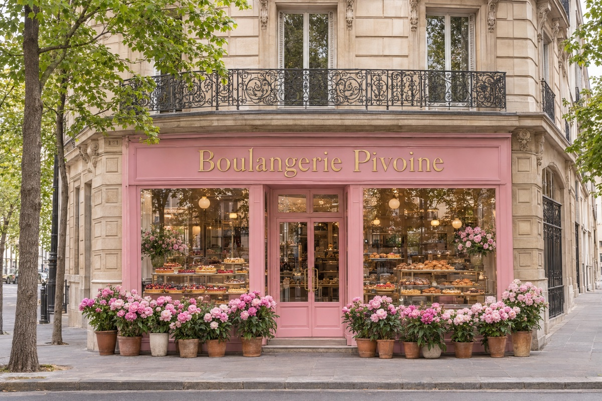
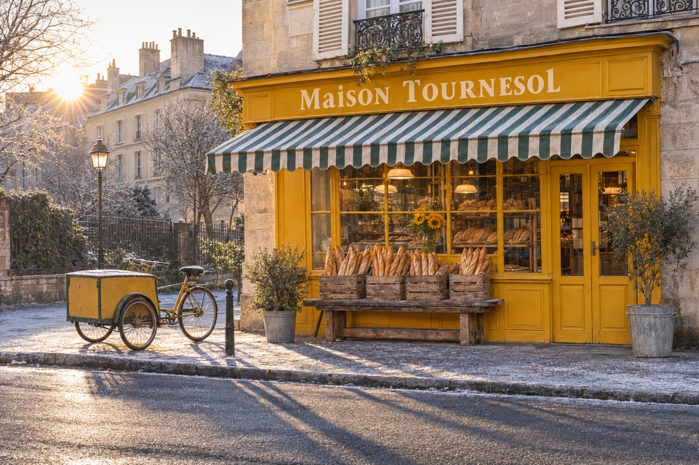

Salt & Ember

A wood-fired bistro on the canal with a counter facing the open kitchen. Coffee arrives as a pour-over or a cortado at the end of a meal, brewed from a house blend roasted nearby.
A small local listing of cafés, bakeries, bistros and bars that have opened or are about to open, newest first.
A wood-fired bistro on the canal with a counter facing the open kitchen. Coffee arrives as a pour-over or a cortado at the end of a meal, brewed from a house blend roasted nearby.

A large, bright boulangerie with a viennoiserie counter and a few tables by the window. Coffee is served as a proper café crème or a double espresso, and the croissants are baked on site every morning.

A tiny natural-wine bar with a short menu of small plates and a changing list by the glass. There is no espresso machine, only a stove-top moka pot brought out for anyone who asks for coffee after dinner.

A relaxed neighbourhood bistro in a former shoemaker's workshop, with a courtyard behind. Lunch comes with a good cup of filter coffee, and the courtyard stays open for coffee and pastries through the afternoon.

A narrow, tiled Italian-style café with a zinc counter and a handful of stools by the window. Coffee is the point here: a short menu of espresso, macchiato and filter from a single roaster, all poured by the owner herself.

A sunny corner bakery turning out morning viennoiserie and country loaves. The espresso comes from a small two-group machine at the end of the counter, with a cup of drip coffee free if you buy a loaf before eight.